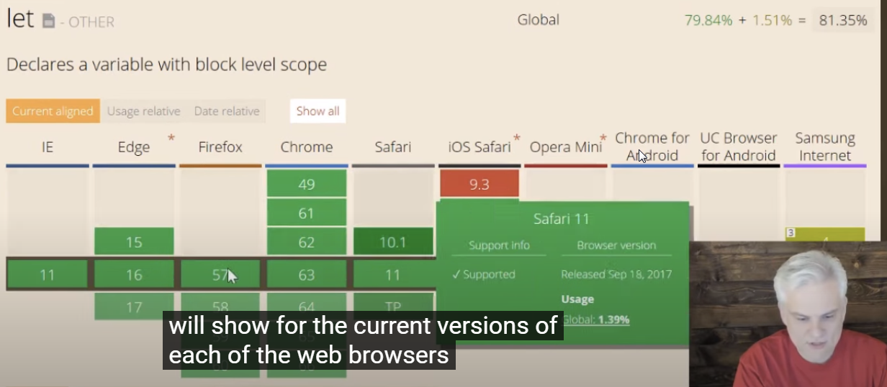

caniuse.com
You can use this web to find out if your Javascript code can or can not be used in the older or newer web browser.

babeljs.io
this web can convert the newer scripts into older scripts so that the older web browser can use.

writing in javascript for web browsers requires that you give some careful thought to how your javascript will ultimately be consumed and who your targets are.
and that definitely means that you're gonna have to take the consideration the fact that some people will be using older web browser
yet writing javasript on a web server using framwork like nod.js, is a bit easier because you'll have some upfront knowledge about where that code will ultemately be executed.
in this course we'll be using nod.js as a lightweight means of executing little tiny javascript examples that we're going to create throughout this course